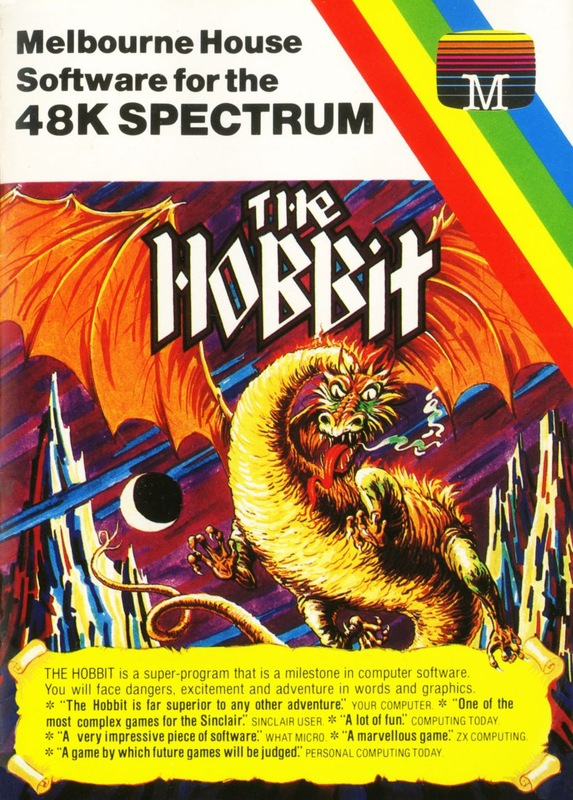
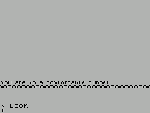

The Hobbit


{kind=link}

| Publisher: | Melbourne House |
| Price: | £14.95 |
| Year: | 1982 |
| Source: | CRASH, Issue 5 |
For reasons unknown, The Hobbit never got an official CRASH review by the staff themselves, however there was a CRASH Reviewers Competition entry in issue 5.

The Hobbit has clocked up huge sates on the Spectrum and has been converted on to three other home micros, as the game has established itself in the affections of millions of computer owners as the most popular adventure game ever. Strange as it may seem, though, as adventure games go it is not nearly as good as it Could have been. Certainly, to experienced micro-adventurerers, it is fairly easily mapped and solved, since it only offers 60 or so locations to be visited, which is pretty small beer by today's standards of cheap RAM. With available memory of the order of 40K in many micros, it is feasible to squeeze well over 200 locations into a game, producing a scenario which has possibilities to test the most seasoned adventure.
The great attraction of the Hobbit lies not in its basic complexity, but in the novel (and very sophisticated) approach its writers have chosen with regard to its operation. To begin with, its recognition of input from the player is amazing, compared to all currently available adventures, Scorning the usual limitations of a two-word input, consisting of a verb-noun pair such as TAKE SWORD or GO EAST, The Hobbit can accept lengthy and quite complex sentences of up to 128 characters in length. It is a great annoyance to players to be given the response 'I can't do that' when a game lacks the vocabulary to carry Out a simple instruction. The vocabulary of the Hobbit is high - three or four times that of the average, so the possibilities of action are correspondingly large. If the program does not recognise a word, it makes the fact clear, and differentiates between this and whether the desired action is possible. It is this quality of input analysis which explains the attraction of the game for first-timers: the Hobbit has been the first game played on a micro for many purchasers of the Spectrum, and very few will have been let down, as the game is so easy to get into, and enjoy, without being too easy. There are two other great attractions of the Hobbit. Most obvious is that the game has popularised the use of graphic illustrations, Although not the first to use pictures of locations (the Apple has had several such adventures for some time) it was the first on a truly popular micro, and has generated a flock of imitators. In fact, there are less than 30 of the simplistic drawings, but they do add a certain something to the game, without wasting too much memory. and point to the future of Sinclair adventures, when a couple of hundred such pictures can be called from the Microdrive. Their only disadvantage in the Hobbit is that they cannot be turned off and when slowly drawn for the fiftieth time they can begin to grate on the patience.
The second novel feature is the apparent independence of action (named animaction by Melbourne) of the other characters in the game. Your co-adventurers, Thorn and Garidall, as well as the elves, trolls, spiders and dragon encountered later, all seem to behave independently at you and each other, and so. it no entry is made from the keyboard. action will continue. GandaIf will flit in and Out, Thorin will, at random, decide to help or hinder your efforts to escape from dungeons, and other inhabitants will appear to live out their lives as the game progresses. The object of the game is to regain the treasure of Smaug, the dragon' but to do so you will need to explore and map the locations, collecting swords, keys and magic rings, on the way Everything about the game exudes class, from the stunning loading screen to the thorough documentation provided. This comprises a 16-page booklet which describes the game and out lines some of the allowed vocabulary and a copy of the original Tolkein book that the game is based upon. The latter is invaluable for hints, particularly concerning the trolls' clearing and the wine cellar - problems which would otherwise be very difficult to solve. As an added extra, not usually provided for in adventure games, it is very easy to send screen output to the ZX printer, to be re-read at leisure.
The Hobbit has set the standard for micro adventure games and although rather highly priced com pared with most, its extreme elegance, ii not its complexity, makes it well worth the outlay - a great starter for the novice adventurer and, hopefully, not the last Tolkein adventure on the Spectrum.